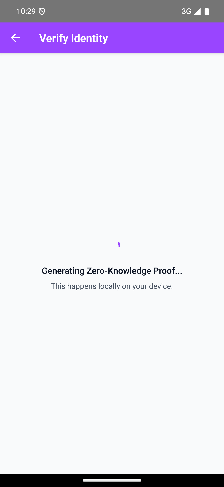

Project Submission
MinKYC
Quick Reference for Judges
- Landing Page: https://getoutofthatgarden.github.io/minkyc-website/
- GitHub Repo & APK: https://github.com/GetOutOfThatGarden/MinKYC
In the Web3 ecosystem, users demand privacy, yet regulatory pressures force platforms to collect vast amounts of sensitive personal data (passports, IDs, facial biometrics). MinKYC solves this paradox. By turning the smartphone into a localized compliance hub, users verify their identity entirely on their device, sharing only mathematical proofs—never their underlying data.
The "Toxic Asset" Problem
Today's KYC infrastructure is fundamentally broken because it relies on centralized data hoarding. When a user signs up for an exchange or a token launchpad, they surrender their most sensitive documents to a third-party server.
For Users: The Identity Honeypot
Users lose control of their data. Centralized databases act as massive honeypots for hackers. When these servers are inevitably breached, users suffer catastrophic identity theft that cannot be undone.
For Platforms: Crippling Liability
For dApps and exchanges, holding user data is not an asset; it is a Toxic Liability. The costs of securing this data, navigating GDPR/CCPA regulations, and the existential threat of a devastating hack stifle innovation and increase go-to-market costs.
The Solution: Zero-Knowledge KYC
MinKYC flips the centralized model on its head by moving the verification process to the edge—directly onto the user's mobile device. We leverage Noir Zero-Knowledge (ZK) circuits to decouple identity verification from data collection.
- Local Data Extraction: The user scans their passport using the MinKYC app. NFC and OCR data extraction happens entirely locally on the phone's secure hardware. PII never touches our servers.
- Cryptographic Proof Generation: When a platform requires KYC (e.g., "Is this user over 18?" or "Is this user a non-US resident?"), the app generates a Noir ZK proof locally.
- Zero Data Egress: The platform receives a cryptographic
true/falseconfirmation and a mathematically sound proof. They get the compliance guarantee without holding the toxic asset.
Why MinKYC is Built on Solana
Solana is the only blockchain infrastructure capable of supporting a high-volume, real-time ZK-KYC network.
The Perfect Synergy
To replace traditional APIs, KYC verifications must be instant and cost pennies. Solana's high throughput and sub-second finality allow platforms to verify Noir ZK proofs on-chain instantly during user onboarding. Furthermore, Solana's low fees make it economically viable to mint immutable, verifiable audit receipts for every KYC transaction, creating a transparent yet completely private compliance trail.
The Solana Seeker Advantage
MinKYC is uniquely designed to shine on the Solana Seeker device, representing a massive leap in UX and security for Web3 mobile applications.
- Native SMS Integration: By integrating deeply with the Solana Mobile Stack (SMS), MinKYC can leverage Mobile Wallet Adapter (MWA) flows, making identity verification as seamless as signing a transaction.
- Secure Hardware Utilization: The Seeker's dedicated secure enclave provides the perfect trusted execution environment for storing localized passport data and generating computationally intensive ZK proofs quickly without compromising mobile battery life.
- Frictionless dApp Experience: Seeker users no longer need to upload IDs to five different dApps. They scan once into MinKYC, and instantly provide ZK proofs to any ecosystem app with a single tap.
Technical Architecture & Innovation
Our stack is designed for absolute privacy, speed, and developer ease of integration.
Product UX & Mobile Experience
MinKYC provides a polished, intuitive interface designed to make complex cryptography invisible to the end user. Below is the end-to-end journey from identity scanning to platform verification and audit logging.


